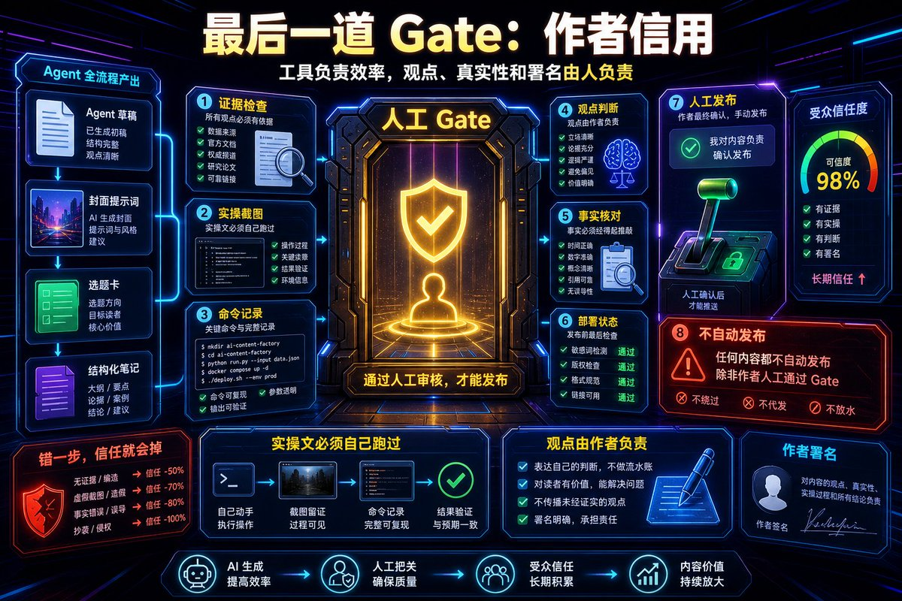
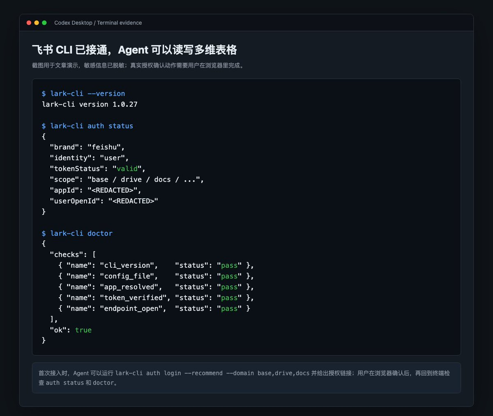
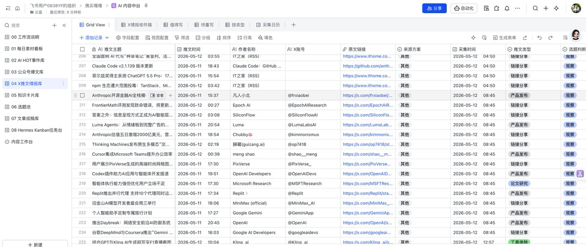
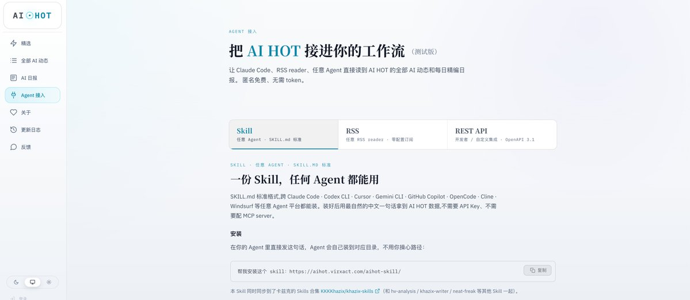
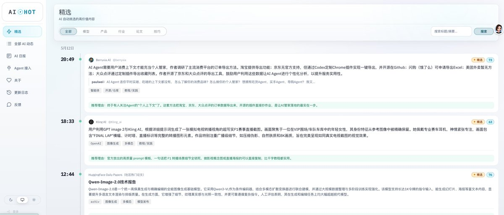
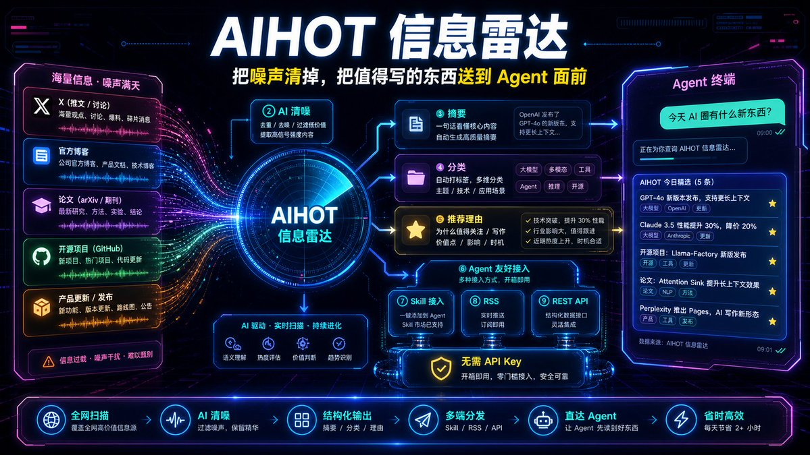
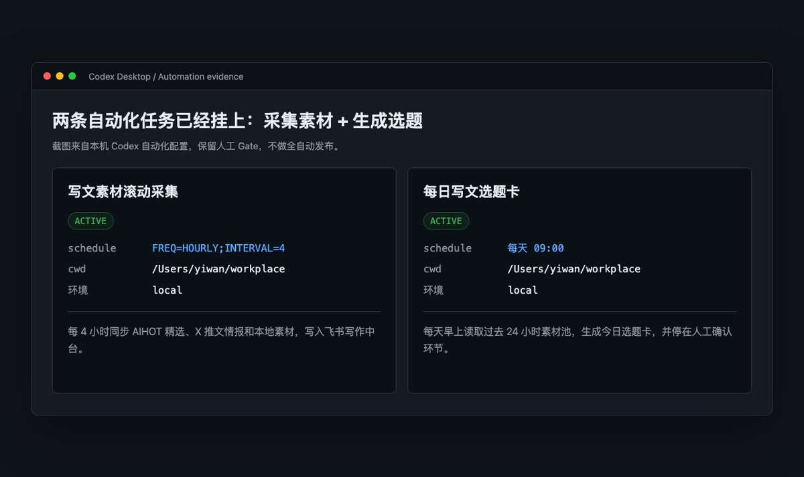

我有一套 AI 内容工厂。
它每天帮我收集 AI 圈的新资料，每 4 小时同步一次 AIHOT 精选，把素材放进飞书；每天早上 9 点，再根据过去 24 小时的内容，给我推荐一批今天可以写的选题。
你现在看到的这篇文章，也是这套系统写出来的。我负责实操、定框架、说清楚我到底想表达什么，然后把它交给 Codex 桌面版里的 Agent 帮我写、帮我改、帮我把流程整理成读者也能复制的版本。
所以这篇文章不只是给人看的。
它也是给 Agent 看的。
你可以把这篇文章复制给任何 Agent：claude Code、Codex、Hermes、OpenClaw、Cursor 都行，跟着里面的提示一步步对话，你也会拥有这样一个系统。
你每天早上刷信息流的状态大概是这样的：打开 X 看两眼，切到公众号后台扫标题，看到感兴趣的链接发给自己微信，顺手存进备忘录。中午又刷到一条 Claude 更新，觉得可以写。到了晚上打开编辑器，面对微信收藏夹里几十条链接、浏览器十几个标签页、AI 对话里几段没写完的半成品，突然不知道从哪开始了。
这种状态我太熟悉了。不是不会写，是「到底写哪个」这件事本身消耗了太多心力。更让人沮丧的是，你每天花在刷信息流上的时间可能比写稿本身还多，但刷完了仍然不知道今天该写什么。
后来我发现，这个问题的根源不是灵感枯竭，而是你的素材、选题、写作、发布这四个环节，彼此不认识。它们散在四个地方，微信收藏夹、备忘录、飞书文档、AI 对话框，每一环的信息都传不到下一环，每一次都要重新检索、重新判断。
我的解决方案很简单。
让它们认识。
这不是全自动发文系统。不要一上来就做全自动发布。它更像一个内容中台，把「看什么」「放哪里」「写哪个」「怎么写」「发不发」这几件事拆开，让 AI 做重复劳动，人保留最终判断。
先说 AIHOT。
AIHOT 的地址在这里：https://aihot.virxact.com/
这个站是@Khazix0918卡兹克大佬做的。我必须先认真夸一下。

很多人做 AI 资讯站，做出来的是一个「列表」。卡兹克做出来的不是列表，是一套有品味的信息过滤器。它每天把 X、官方博客、论文、产品更新、行业动态这些东西抓回来，再用 AI 做筛选、摘要、分类、推荐理由。你打开之后看到的不是一堆链接，而是一张已经被人替你清过噪的桌子。
这件事很难得。
信息源这东西，表面上看只是「谁订阅得多」。但真正决定质量的，是谁有耐心每天去调信源、筛噪声、修页面、补接口、下线不合适的东西、把手机端适配好，还愿意把 Agent 接入方式做成公开入口。卡兹克大佬这波不是简单开了一个网站，而是把自己每天看 AI 圈的那套雷达，直接摆到所有人面前。
这就很大气。
更妙的是，他还把 AIHOT 做到了 Agent 友好。站内有一个「Agent 接入」页面：https://aihot.virxact.com/agent，明确给了三条路：Skill、RSS、REST API。对内容创作者来说，最省心的是 Skill，因为你不需要配 API Key，不需要自己起 MCP server，也不需要记什么接口路径。
你只要在自己的 Agent 里说一句：
帮我安装这个 skill：https://aihot.virxact.com/aihot-skill/
```
请帮我搭建一套「Codex + AIHOT + 飞书」内容中台。
目标：
1. 接入 AIHOT，作为 AI 圈每日素材来源。
2. 接入飞书多维表格，创建一套完整的内容中台 Base。
3. 建立两个自动化任务：
- 每 4 小时同步一次 AIHOT 精选素材。
- 每天早上 9 点，根据过去 24 小时素材推荐今日选题。
4. 所有发布动作必须保留人工确认，不做全自动发布。
请按下面顺序执行。
第一步，检查并安装 AIHOT Skill。
如果当前 Agent 还没有 AIHOT Skill，请安装：
https://aihot.virxact.com/aihot-skill/
安装后用「今天 AI 圈有什么新东西？」验证是否能返回 AIHOT 精选。
第二步，检查飞书 CLI。
请先运行：
lark-cli --help
如果系统提示没有 lark-cli，请帮我安装飞书 CLI。安装命令是：
npm install -g @larksuite/cli
如果系统没有 npm 或 Node.js，请停下来告诉我缺什么，不要硬编。
第三步，引导我完成飞书授权。
请依次运行或指引我运行：
lark-cli config show
lark-cli auth login --recommend --domain base,drive,docs
lark-cli auth status
lark-cli doctor
如果需要浏览器授权，请把授权链接发给我，并停下来等我完成授权。App Secret、授权码、token 等敏感信息不要写进文章、不要截图外泄。
第四步，创建飞书多维表格。
请创建一个名为「AI 内容中台」的飞书 Base，并创建以下 10 张表和基础字段。
01 每日素材池
字段：日期、来源、标题、链接、摘要、发布时间、分类、标签、AIHOT 推荐理由、是否进入选题池、关联选题、入库时间。
02 AIHOT 精选入库
字段：AIHOT 条目 ID、标题、原文链接、来源、发布时间、分类、摘要、推荐理由、质量分、是否精选、同步批次、入库时间。
03 历史对标文章库
字段：平台、账号、标题、链接、发布时间、阅读/互动数据、选题类型、标题结构、开头方式、可复用点、备注。
说明：AIHOT 的公众号爆文公开页已经在 2026 年 5 月 8 日下线，这张表只放我自己已有的历史数据或后续人工补充的数据，不要再写「从 AIHOT 抓公众号爆文」。
04 X 推文情报库
字段：作者、账号、推文链接、发布时间、原文摘要、观点标签、是否可引用、关联素材、截图路径、备注。
05 知识卡片库
字段：卡片标题、概念/框架/金句/案例类型、正文、来源、适用主题、关联文章、可复用等级、更新时间。
06 选题池
字段：选题标题、目标读者、读者痛点、反常识角度、可用证据、推荐平台、H 分、K 分、R 分、E 分、总分、状态、关联素材、负责人、创建时间。
07 草稿与成稿库
字段：文章标题、平台、选题来源、正文路径、摘要、当前状态、字数、封面状态、发布时间、发布链接、复盘结论。
08 封面与视觉资产库
字段：文章标题、平台、比例、封面提示词、生成模型、图片路径、是否采用、版本、备注。
说明：封面不是只有 16:9，要按公众号、小红书、头条、X 等平台分别适配。
09 Agent 任务台
字段：任务名称、触发方式、执行平台、输入表、输出表、模型/工具、运行状态、错误信息、日志路径、最近运行时间。
10 工作流说明
字段：触发词、使用场景、输入、输出、会读哪些表、会写哪些表、是否需要人工确认、说明。
第五步，创建工作流记录。
请在「工作流说明」表里写入这些触发词：
更新今日内容中台
生成今日选题卡
把这个选题写成公众号初稿
给这篇文章生成多平台封面方案
复盘这篇文章
第六步，创建自动化任务。
如果当前 Agent 环境支持定时自动化，请直接创建两条自动化任务：
1. 每 4 小时同步 AIHOT 精选素材。
2. 每天早上 9 点生成今日选题卡。
如果当前环境暂时不能直接创建定时任务，请先在「Agent 任务台」里登记这两条任务，并告诉我下一步应该在哪里开启定时执行。
执行前先输出计划和字段映射。如果需要真正写入飞书，请先让我确认「执行」。
```Agent 会自己把 Skill 装到对应目录里。装好之后，你再用很自然的中文问：
今天 AI 圈有什么新东西？
它就会去 AIHOT 拉数据。
这里面最漂亮的地方在于，AIHOT Skill 用的是标准 SKILL.md 格式，理论上跨 Claude Code、Codex CLI、Cursor、Gemini CLI、GitHub Copilot、OpenCode、Cline、Windsurf 这一类 Agent 平台都能吃。对普通用户来说，这比「你先去申请 Key、再写配置、再配 MCP」友好多了。
卡兹克大佬的推文 AIHOT：https://x.com/Khazix0918/status/2052234427233939808
一个人愿意把自己日常用的信息系统公开出来，还做成 Agent 可用的 Skill，这种事我是真的要给彩虹屁的。AI 圈每天都有人讲「生态」，但很多生态只是 PPT 里的生态；这种能打开、能订阅、能接入、能让 Agent 真正干活的东西，才是对普通创作者有用的生态。
回到我这套内容中台。
我把它分成六层，但注意，这六层不是六个模型。
模型是可以换的。今天你用 GPT-5.5，明天换一个中文写作更顺的模型，后天换一个策划能力更强的模型，都可以。架构里真正稳定的东西不是模型名字，而是每一层负责什么。
第一层是 AIHOT，负责信息采集。
它是雷达。每天 AI 圈发生了什么，哪些是模型发布，哪些是产品更新，哪些是论文研究，哪些是行业动态，哪些只是看起来热闹但其实不用看，AIHOT 先帮我扫一遍。
第二层是 Codex 桌面版，负责执行和调度。
Codex 桌面版不只是一个聊天框。它更像一个可以看到本地文件、可以跑命令、可以读写草稿、可以帮你把过程留下来的工作台。它能把「拉 AIHOT」「写入飞书」「生成选题」「生成初稿」「记录日志」「回传结果」这些动作串起来。Hermes、Claude Code、OpenClaw、Cursor 也可以照着这个思路迁移，只是我这次实操主要在 Codex 桌面版里完成。
第三层是素材整理和选题层。
这层以前我写成某个具体模型，这是不对的。模型不是重点。重点是把 AIHOT 拉回来的东西，从「今天有 20 条信息」变成「今天有 5 个值得写的选题」。这层要做的是去重、归类、补摘要、打标签、生成选题卡、给 H/K/R/E 评分。
H 是好奇心，读者有没有点开的冲动。
K 是知识价值，读完有没有认知增量。
R 是共鸣，读者会不会觉得「这不就是我最近遇到的问题吗」。
E 是执行难度，这个选题今天能不能写出来，证据够不够，素材有没有缺口。
第四层是飞书多维表格，负责结构沉淀。
这是整套系统的骨架。AIHOT 是流，飞书是池子。没有飞书，今天的信息明天就散了；有了飞书，每条素材、每个选题、每篇草稿、每张封面、每次 Agent 运行结果，都有自己的位置。

第五层是创作工坊。
我故意不用某个模型名来命名这一层。因为这层真正负责的是创作动作，不是某个模型。它要根据选题卡和素材生成公众号初稿、X 长帖、小红书图文脚本、今日头条版本，还要生成不同平台的封面提示词。你可以让 GPT-5.5 来写，也可以让任何你觉得中文顺手的模型做改写。只要输入输出规范稳定，模型随时可以换。
第六层是人工 Gate。
这层不能省。选题是不是值得写，文章有没有偏离你的判断，能不能发布，哪些话要删，哪些观点要补，最终都得人来定。AI 可以替你跑腿，但不能替你背书。
所以这套系统一句话概括就是：
AIHOT 发现信息，Codex 桌面版执行动作，飞书沉淀结构，选题层把素材变成可写的题，创作工坊把题变成不同平台的稿件，人做最后判断。

真正动手的时候，不必把飞书 CLI、AIHOT Skill、建表、自动化分成十几个零散教程。你可以直接把下面这段话复制给 Codex 桌面版，让 Agent 一手包办。
这段提示词的用法很简单。你不用先学一堆飞书 API，也不用先想表结构。你把它丢给 Agent，它会先检查有没有 AIHOT Skill，再检查有没有 lark-cli，没有就装，有就继续授权。授权这一步它不能替你点浏览器确认，所以它会把链接给你，你打开、授权、回到终端确认状态就行。

真正需要你亲自做的，只有两个动作：浏览器里确认飞书授权，以及在 Agent 输出建表计划后回复「执行」。

这也是为什么我说文章要写给 Agent 看。以前你看一篇教程，要自己把每个步骤复制到终端里；现在你把整段任务丢给 Agent，它会自己拆成步骤执行，遇到需要你授权的地方停下来等你，遇到缺命令的地方先检查环境。

飞书通了以后，这套系统的日常运转就很清晰。
第一条自动化任务，是每 4 小时同步一次 AIHOT。
它不需要每次拉全量。默认拉最近一段时间的精选内容，按链接或 AIHOT 条目 ID 去重，然后写入「AIHOT 精选入库」和「每日素材池」。如果同一条素材已经存在，就更新摘要、推荐理由、分类和入库批次，不要重复写一条新记录。
这条任务的价值是持续补水。你不用早上一次性刷完所有信息，也不用担心下午出了一个新模型、新产品、新论文被漏掉。它每 4 小时看一眼，把值得看的东西放进池子里。
第二条自动化任务，是每天早上 9 点推荐选题。

它读取过去 24 小时的「每日素材池」和「AIHOT 精选入库」，按主题聚类，生成 3 到 5 个候选选题。每个选题都要带目标读者、读者痛点、反常识角度、可用证据、建议平台、H/K/R/E 评分，然后写入「选题池」。
这条任务的价值是减少选题焦虑。你早上打开 Codex，不是面对一堆未读链接，而是看到一张已经整理好的选题卡。你要做的不是从信息流里捞针，而是在几个可写的方向里，挑一个今天最想表达的。
这里的关键是，自动化只到「推荐选题」为止。
不要让它自动发布。第一版做到「采集素材、生成选题、人工确认、生成初稿、生成多平台封面、回写飞书」就已经很够用了。发布最好始终留一个人工 Gate。写作这件事，AI 可以帮你把信息差磨平，但最后署名的人是你。
如果你想手动触发，也可以直接对 Agent 说这些话：
更新今日内容中台
Agent 会调用 AIHOT Skill，把最新精选同步进飞书。
生成今日选题卡
Agent 会读取今天素材，生成候选选题，写入选题池。
把这个选题写成公众号初稿
Agent 会读取你指定的选题和关联素材，生成本地 markdown 初稿，并把路径回填到「草稿与成稿库」。
给这篇文章生成多平台封面方案
Agent 会按平台输出封面提示词和比例。公众号、小红书、头条、X 的比例不一样，不要只做一张 16:9。
复盘这篇文章（功能待）
文章发布后，Agent 把阅读数据、收藏、转发、评论、标题版本、封面版本写回成稿库，并把可复用的观点、类比、金句拆到知识卡片库。
这样看，这套东西听起来像自动化，其实我觉得更像是把写作里最烦的部分，交给一个不怕重复劳动的助手。
以前每天最消耗人的，不是写文章本身，而是你打开十几个页面，刷了一个小时，脑子里有二十个碎片，但没有一个成型的选题。AIHOT 解决的是「看什么」，飞书解决的是「放哪里」，Codex 桌面版解决的是「谁来跑」，选题层解决的是「写哪个」，创作工坊解决的是「怎么变成稿」，人工 Gate 解决的是「这是不是我真的要发的东西」。
这些问题一个个被放到正确的位置上，内容生产就不再像每天临时抓阄。
它会变成一条可以复用的线。
而且这条线不是只属于我。你把这篇文章复制给任何一个靠谱的 Agent，让它按里面的说明执行，它就应该能一步步把系统搭出来。
这大概也是我现在最兴奋的地方。
文章不再只是文章。文章也可以是一份给 Agent 的操作协议。
但我也想把边界说清楚。
内容中台只是辅助，不管工具多先进，最后能让读者记住你的，仍然是你自己的观点、判断和经验。观点类内容可以参考别人怎么想，但不能只做观点搬运；实操类、教程类内容更不能只靠转述。你最好真的自己跑过一遍、部署过一遍、踩过坑、修过错，再把过程写出来。
因为实操文最重要的不是「看起来很懂」，而是读者照着做的时候真的能跑通。你分享的经验越具体，读者对你的信任也越具体。如果步骤是错的、截图是假的、经验是听来的，读者这一次可能只是卡住，下一次就不会再相信你。AI 可以帮我们提高生产效率，但不能替我们承担署名背后的信用。
最后，再一次感谢卡兹克！！！
复制前检查一下：